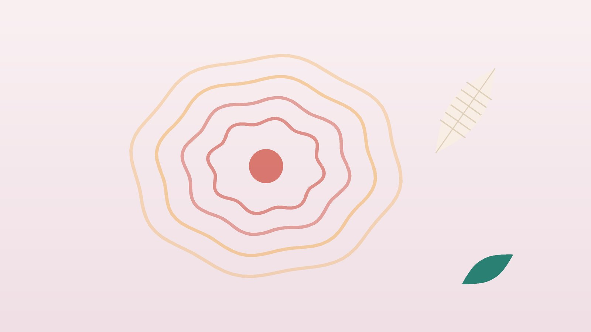

건강 칼럼 · 인천 복합부위통증증후군 한의원
다친 뒤 통증이 점점 번진다면, 복합부위통증증후군(CRPS) 한방 관리

혹시 복합부위통증증후군일까요?
- 다친 지 몇 주가 지났는데 통증이 오히려 커지고 다친 자리 밖으로 번진다
- 옷깃이나 이불이 스치기만 해도 화끈거리거나 칼로 베는 듯 아프다
- 아픈 손발이 반대쪽보다 붓고, 붉거나 푸르스름하게 색이 바뀐다
- 만져 보면 반대쪽보다 눈에 띄게 뜨겁거나 차갑다
- 아픈 쪽에만 땀이 많거나, 손발톱·털이 다르게 자란다
- 관절이 뻣뻣해 주먹을 쥐거나 발을 딛기가 점점 힘들다
이 체크리스트는 진단 도구가 아닙니다. 여러 개가 해당하면 통증의학과나 재활의학과에서 정확한 진단을 받아 보세요.
바로 병원에 가야 하는 경우
- 깁스 안이 점점 조이고 아픔: 손발가락이 저리고 색이 하얗거나 검푸르게 변하면 깁스를 연 병원이나 응급실로 바로 가세요.
- 열과 함께 붉게 부어오름: 수술 자리 주변이 뜨겁게 붓고 열이 나면 감염일 수 있습니다.
- 손발이 차갑고 맥이 약함: 한쪽 팔다리가 갑자기 차갑고 창백해지면 혈관이 막힌 것일 수 있으니 응급실로 가세요.
- 죽고 싶은 생각: 통증이 너무 힘들어 이런 생각이 든다면 자살예방상담전화 109로 바로 이야기해 주세요.
왜 생기고, 어떻게 진단하나요?
다친 뒤 염증 반응이 지나치게 오래가고, 통증을 전달하는 신경과 혈관을 조절하는 자율신경, 뇌가 몸을 느끼는 방식까지 함께 예민해지면서 생긴다고 봅니다. 손목 골절 뒤나 깁스를 오래 한 뒤 잘 생기며, 신경 손상이 확인되지 않은 1형과 신경 손상이 뚜렷한 2형으로 나눕니다.
진단은 혈액 검사 하나로 정하지 않고, 국제적으로 쓰이는 부다페스트 진단 기준에 따라 증상과 진찰 소견을 모아 판단합니다.
- 감각: 스치기만 해도 아프거나, 아픈 자극에 지나치게 아파합니다.
- 혈관 운동: 피부 온도와 색이 반대쪽과 다릅니다.
- 땀·붓기: 붓거나 땀이 나는 정도가 달라집니다.
- 운동·영양: 관절이 굳고 힘이 빠지며 떨림, 손발톱·털·피부 변화가 생깁니다.
- 다른 원인 배제: 이 증상을 더 잘 설명하는 다른 병이 없어야 합니다.
한의학은 이 통증을 어떻게 보나요?
한의학에서는 저리고 아프며 움직임이 막히는 병을 비증(痺證)으로 묶어 보았습니다. 『황제내경 소문』 비론편은 바람·추위·습한 기운이 섞여 들어와 비증이 된다고 했고, 다친 뒤 남은 어혈이 경락을 막으면 통증이 오래간다고 해석합니다.
붉고 뜨겁게 붓는 시기에는 열과 습을, 차갑고 창백해진 시기에는 차가움과 혈의 부족을, 오래 굳은 시기에는 어혈을 중심으로 보고, 통증 때문에 잠과 마음이 지친 상태도 함께 살핍니다.
나의 통증은 어떤 유형일까?
병원 진단을 받은 뒤 함께 쓰는 한의학적 구분이며, 한 분에게 두 유형이 겹치거나 시기에 따라 바뀌기도 합니다.
1. 습열(濕熱) 뜨겁게 붓는 유형
- 이런 분에게 많아요
- 다친 지 몇 달 안 된 초기
- 나타나는 모습
- 아픈 손발이 붉고 뜨겁게 부어 있다
- 함께 오는 몸의 신호
- 화끈거림, 땀이 많음, 갈증
- 진찰에서 보이는 모습
- 만지면 반대쪽보다 따뜻하고 피부가 번들거림
- 치료 방향
- 열을 내리고 붓기를 빼는 방향 (사묘산 계열)
- 오늘부터 해 볼 것
- 아픈 손발을 베개 위에 올려 두고, 너무 차가운 물에는 담그지 마세요.
2. 한응혈허(寒凝血虛) 차갑고 창백한 유형
- 이런 분에게 많아요
- 통증이 반년 이상 이어진 분
- 나타나는 모습
- 손발이 차고 푸르스름하며 추우면 더 아프다
- 함께 오는 몸의 신호
- 저림, 손발 시림, 쉽게 지침
- 진찰에서 보이는 모습
- 피부가 차고 얇으며 맥이 가늚
- 치료 방향
- 차가움을 풀고 혈을 기르는 방향 (당귀사역탕 계열)
- 오늘부터 해 볼 것
- 장갑이나 양말로 체온을 지키되, 뜨거운 찜질팩은 직접 대지 마세요.
3. 어혈조락(瘀血阻絡) 굳고 찌르는 유형
- 이런 분에게 많아요
- 골절·수술 뒤 관절을 오래 못 쓴 분
- 나타나는 모습
- 관절이 뻣뻣하고 찌르듯 아프며 밤에 심하다
- 함께 오는 몸의 신호
- 피부가 윤기 없이 거칠어짐
- 진찰에서 보이는 모습
- 혀에 어두운 점, 아픈 자리가 단단함
- 치료 방향
- 막힌 어혈을 풀어 통증과 굳음을 덜어 주는 방향 (신통축어탕 계열)
- 오늘부터 해 볼 것
- 아프지 않은 손가락이나 발가락부터 하루 여러 번 조금씩 움직여 주세요.
4. 간기울결(肝氣鬱結) 마음까지 지친 유형
- 이런 분에게 많아요
- 통증 때문에 잠과 일상이 무너진 분
- 나타나는 모습
- 걱정이 많고 작은 자극에도 통증이 확 커진다
- 함께 오는 몸의 신호
- 가슴 답답함, 한숨, 얕은 잠
- 진찰에서 보이는 모습
- 맥이 팽팽하고 어깨·목이 굳어 있음
- 치료 방향
- 긴장을 풀고 잠을 돕는 방향 (가미소요산 계열)
- 오늘부터 해 볼 것
- 잠들기 전 10분 천천히 숨 쉬기를 해 보세요.
한의원에서는 어떻게 진찰하나요?
- 손상과 치료 이력: 언제 어떻게 다쳤는지, 수술·깁스 기간, 지금 받는 병원 치료와 약을 여쭙습니다.
- 양쪽 비교: 피부색, 붓기, 땀, 관절 움직임을 반대쪽과 나란히 놓고 봅니다.
- 자율신경 검사: 통증과 함께 무너진 긴장·이완의 균형을 확인해 치료 방향을 정하는 데 참고합니다.
- 의뢰: 아직 진단을 받지 않았다면 통증의학과나 재활의학과 진료를 먼저 권합니다.
침·약침·한약 치료는 어떻게 하나요?
복합부위통증증후군은 통증의학과·재활의학과 치료가 중심이며, 한의 치료는 그 곁에서 통증과 수면, 몸의 회복을 돕는 역할입니다. 침과 한약 연구는 아직 규모가 작고 결과도 고르지 않아 효과를 단정하기 어렵다는 점을 솔직하게 말씀드립니다.
1. 침 치료
- 반대쪽 같은 자리: 아픈 팔다리는 건드리기만 해도 아플 수 있어, 반대쪽 같은 자리를 치료하는 거자법(巨刺法)을 씁니다.
- 합곡(合谷): 손등 엄지와 검지 뼈가 만나는 사이로, 팔 쪽 통증에 고릅니다.
- 태충(太衝): 발등 엄지와 둘째 발가락 뼈가 만나는 앞쪽 오목한 곳으로, 긴장과 다리 통증에 씁니다.
- 백회(百會): 정수리 한가운데로, 예민해진 몸과 잠을 돌볼 때 씁니다.
가는 침을 얕게 쓰고, 그날 통증 정도에 따라 개수와 시간을 줄입니다. 차가운 유형은 아픈 곳에서 떨어진 목·허리 주변에 온열 요법을 시행합니다.
2. 약침
약침은 아픈 팔다리에 직접 놓기보다 목·등·허리처럼 떨어진 자리의 경혈에 소량만 놓고, 시술 뒤 통증이 커지지 않는지 확인하며 이어 갈지 정합니다.
3. 한약
붓고 뜨거운 시기, 차갑게 굳은 시기, 잠과 마음이 지친 상태에 맞춰 탕약을 처방하며, 만성 신경계 통증이라 2~3개월 이상 단계별로 경과를 봅니다. 통증의학과에서 받은 신경통약, 항우울제, 스테로이드 같은 약은 알려 주시면 확인해 처방하며, 처방약은 담당 의사와 상의 없이 끊지 마세요. 임신 중이거나 신장 질환, 위장 질환 병력이 있다면 진료 때 꼭 알려 주세요. 확인 후 안전한 약재로 처방합니다. 한약은 원장이 원내 탕전실에서 약재 선별부터 달이는 과정까지 직접 관리하며, 10일분씩 처방해 복용 경과를 보고 약재 구성과 양을 조절합니다.
원장님이 네이버 블로그에 진료 이야기와 건강 정보를 꾸준히 올리고 있습니다. 더 많은 이야기는 블로그에서 확인해 보세요.
블로그 보기관리는 어떤 순서로 진행되나요?
- 진단과 병원 치료 통증의학과·재활의학과에서 진단을 받고 약물, 신경차단술, 재활 계획을 세웁니다.
- 통증 낮추기 병원 치료와 함께 침·한약으로 통증과 잠을 돌봐 재활을 따라갈 힘을 만듭니다.
- 다시 쓰기 거울 치료, 둔감화 연습, 조금씩 늘리는 운동으로 아픈 팔다리를 다시 쓰게 합니다.
- 일상 복귀 통증이 줄어든 뒤에도 생활 습관과 마음 관리를 이어 다시 나빠지지 않게 합니다.
회복 속도는 사람마다 크게 다르며, 진찰과 병원 치료 경과를 보며 개인별로 안내합니다.
통증을 덜 키우는 생활 관리
- 조금씩이라도 쓰기: 아프다고 아예 쓰지 않으면 관절이 더 굳습니다. 컵 들기처럼 작은 동작부터 매일 해 보세요.
- 거울 연습: 거울을 몸 가운데 세워 아프지 않은 손발이 비치게 하고, 그 손발을 움직이며 거울 속 모습을 바라보는 연습입니다. 재활 선생님께 방법을 배운 뒤 하세요.
- 부드러운 자극: 면이나 털실처럼 부드러운 천으로 아픈 자리 근처를 살살 쓸어 주며 예민함을 조금씩 줄여 봅니다.
- 온도 조심: 감각이 달라져 화상이나 동상을 입기 쉬우니, 얼음과 뜨거운 찜질을 아픈 자리에 직접 대지 마세요.
- 마음 돌보기: 걱정과 우울은 통증을 키웁니다. 가족에게 힘든 점을 나누고, 담배는 혈관을 좁히므로 끊는 것이 좋습니다.
다른 진료가 함께 필요한 경우
- 통증의학과: 신경병성 통증 약, 교감신경 차단술, 필요하면 척수 자극술 같은 치료를 받습니다.
- 재활의학과: 작업·물리 치료, 거울 치료, 단계적 운동 프로그램을 받습니다.
- 정신건강의학과: 우울·불안이 가벼운 경우 한약 치료를 중심으로 관리하기도 합니다. 증상이 깊어졌다면 정신건강의학과 치료를 함께 받으세요.
자주 묻는 질문 Q&A
- Q1. 엑스레이나 피 검사로 진단되나요?
- 한 가지 검사로 정하지 않습니다. 증상과 진찰 소견을 기준에 맞춰 보고, 뼈 스캔이나 체온 차이 검사를 참고로 쓰기도 합니다.
- Q2. 꾀병이나 예민한 성격 탓이라는 말을 들었어요.
- 실제로 신경과 혈관, 면역 반응이 바뀌는 병입니다. 혼자 참지 말고 통증을 정확히 설명해 진단을 받으세요.
- Q3. 그냥 두어도 나아지는 병인가요?
- 초기에 좋아지는 분도 있지만 오래가는 경우도 있어, 빨리 치료를 시작하는 것이 중요합니다.
- Q4. 아프면 쉬는 게 낫지 않나요?
- 오래 쓰지 않으면 굳음과 예민함이 더 심해질 수 있어, 아프지 않은 범위에서 조금씩 쓰는 편이 좋습니다.
- Q5. 침을 맞으면 더 아프지 않을까요?
- 아픈 팔다리를 피해 반대쪽과 떨어진 자리를 쓰고, 그날 반응을 보며 강도를 줄입니다.
- Q6. 병원 약과 한약을 같이 먹어도 되나요?
- 복용 중인 병원 약을 알려 주시면 확인해 처방합니다. 병원 약은 스스로 줄이거나 끊지 마세요.
- Q7. 교통사고 뒤에 생겼는데 자동차보험 진료가 되나요?
- 사고로 다친 뒤 생긴 통증이면 자동차보험으로 진료받을 수 있습니다.
- Q8. 혼자 지압해도 괜찮은 자리가 있나요?
- 아프지 않은 쪽 손의 합곡혈을 엄지로 부드럽게 눌러 주세요. 아픈 팔다리는 세게 누르지 마세요.
문원열 대표원장한의사 · 365스마일한의원
임상 경력 15년, 인천 서구 가정동에서 개원 후 10년째 진료하고 있으며, FCST 턱관절학회·연부조직학회·침도학회 등에서 활동합니다. 아픈 곳만이 아니라 증상의 원인을 찾아 진료합니다.
진료 안내
- 진료시간
- 평일 09:00~20:00 (점심시간 13:00~14:00, 접수 마감 19:30)
토·일·공휴일 09:00~15:00 (접수 마감 14:30) - 주소
- 인천광역시 서구 가경주로 46, 2층 (가정동)
인천2호선 가정중앙시장역 인근
영상으로 길 안내 보기 → - 주차
- 한의원 건물 바로 앞 1층 도원주차장
- 예약
- 예약 바로가기 또는 전화 예약
진료시간은 사정에 따라 바뀔 수 있으니 방문 전 전화로 확인해 주세요.
함께 읽으면 좋은 칼럼
건강 칼럼 전체 보기 →


참고 자료
- Harden RN, et al. Validation of proposed diagnostic criteria (the "Budapest Criteria") for Complex Regional Pain Syndrome. Pain, 2010
- Harden RN, et al. Complex Regional Pain Syndrome: Practical Diagnostic and Treatment Guidelines, 5th Edition. Pain Medicine, 2022
- 『황제내경 소문(素問)』 비론(痺論)
- 질병관리청 국가건강정보포털 — 원문
※ 이 글은 일반적인 건강 정보이며, 개인의 상태에 따라 치료 방법과 결과는 다를 수 있습니다. 정확한 진단과 치료는 진료를 통해 결정됩니다. 침·약침 시술 후 드물게 멍, 통증 등이 생길 수 있습니다.